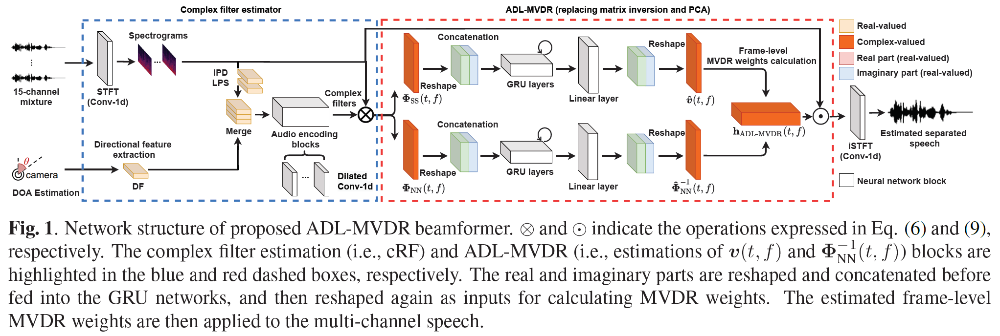

submitted to ICASSP2021, Zhuohuang Zhang (zhuozhan@iu.edu), Yong Xu

Purely neural network based speech separation systems often cause nonlinear distortion on the separated speech, which is harmful for many automatic speech recognition (ASR) systems [1]. The minimum variance distortionless response (MVDR) beamformer can be used to minimize the distortion, yet conventional MVDR approaches still result in high level of residual noise [2,3]. In this study, we propose a novel recurrent neural network (RNN) derived MVDR (denoted as RD-MVDR) method, where the matrix inverse and eigenvalue decomposition are replaced by two RNNs. Our model can greatly remove the residual noise while ensuring the distortionless of the target speech. Our system outperforms prior arts in many objective evaluation metrics as well as the ASR accuracy.
A Mandarin audio-visual dataset [4,5] is adopted for this study.
Systems evaluated:
1. NN with cRM: A Conv-TasNet variant [4,5] with complex ratio mask (denoted as cRM)
2. NN with 3X3 cRF: A Conv-TasNet variant [4,5] with complex ratio filtering (denoted as cRF, please refer to the paper for details)
3. MVDR with cRM: An MVDR system with complex ratio mask [3]
4. Multi-tap MVDR with cRM: A multi-tap MVDR system with complex ratio mask [3]
5. Proposed RD-MVDR with 3X3 cRF: Our proposed RD-MVDR system with 3X3 cRF
Demo 1: Simulated 1-speaker noisy mixture for target speech separation [Sorry that the demos are all recorded in Mandarin Chinese.]
| Mix (1 speaker + non-stationary additive noise) wav | Reverberant clean (reference) wav | NN with cRM wav | NN with 3X3 cRF wav |


MVDR with cRM wav |
Multi-tap MVDR with cRM [2-tap, i.e., (t-1,t)] wav |
Proposed RD-MVDR with 3X3 cRF wav |
Demo2: Simulated 2-speaker noisy mixture for target speech separation (waveforms aligned with the spectrograms shown in Fig. 2 of the paper) separation


| Mix (1 speaker + non-stationary additive noise) wav | Reverberant clean (reference) wav | Purely NN-based cRM (removes the residual noise but results in large amount of distortion) wav | Purely NN-based 3X3 cRF (removes the residual noise but results in large amount of distortion) wav |


Baseline MVDR with cRM (ensures the distortionless of target speech, but results in high-level of residual noise) wav |
Multi-tap MVDR (2-tap) with cRM (ensures the distortionless of target speech, but results in high-level of residual noise) wav |
Proposed RD-MVDR with 3X3 cRF (removes the residual noise, also ensures the distortionless of target signal)wav |
Demo 3: Simulated 3-speaker noisy mixture for target speech separation


| Mix (1 speaker + non-stationary additive noise) wav | Reverberant clean (reference) wav | Purely NN-based cRM (removes the residual noise but results in large amount of distortion) wav | Purely NN-based 3X3 cRF (removes the residual noise but results in large amount of distortion) wav |


Baseline MVDR with cRM (ensures the distortionless of target speech, but results in high-level of residual noise) wav |
Multi-tap MVDR (2-tap) with cRM (ensures the distortionless of target speech, but results in high-level of residual noise)wav |
Proposed RD-MVDR with 3X3 cRF (removes the residual noise, also ensures the distortionless of target signal)wav |
Reference:
[1] Du, Jun, et al. "Robust speech recognition with speech enhanced deep neural networks." Interspeech2014
[2] Xiao, Xiong, et al. "On time-frequency mask estimation for MVDR beamforming with application in robust speech recognition." ICASSP2017
[3] Xu, Yong, et al. "Neural Spatio-Temporal Beamformer for Target Speech Separation." accepted to Interspeech2020.
[4] Tan, Ke, et al. "Audio-visual speech separation and dereverberation with a two-stage multimodal network." IEEE Journal of Selected Topics in Signal Processing (2020).
[5] Luo, Yi, and Nima Mesgarani. "Conv-tasnet: Surpassing ideal time–frequency magnitude masking for speech separation." IEEE/ACM transactions on audio, speech, and language processing 27.8 (2019): 1256-1266.